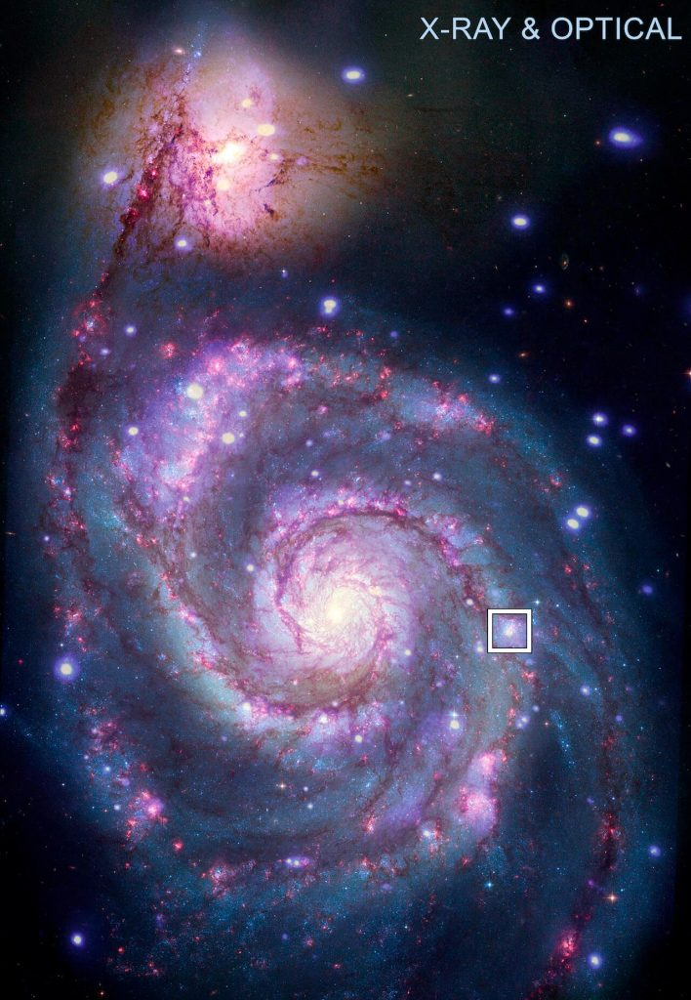
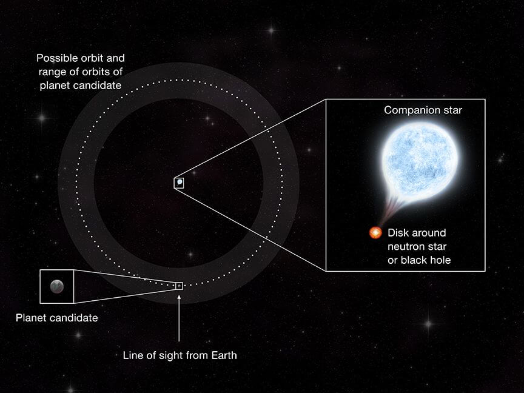
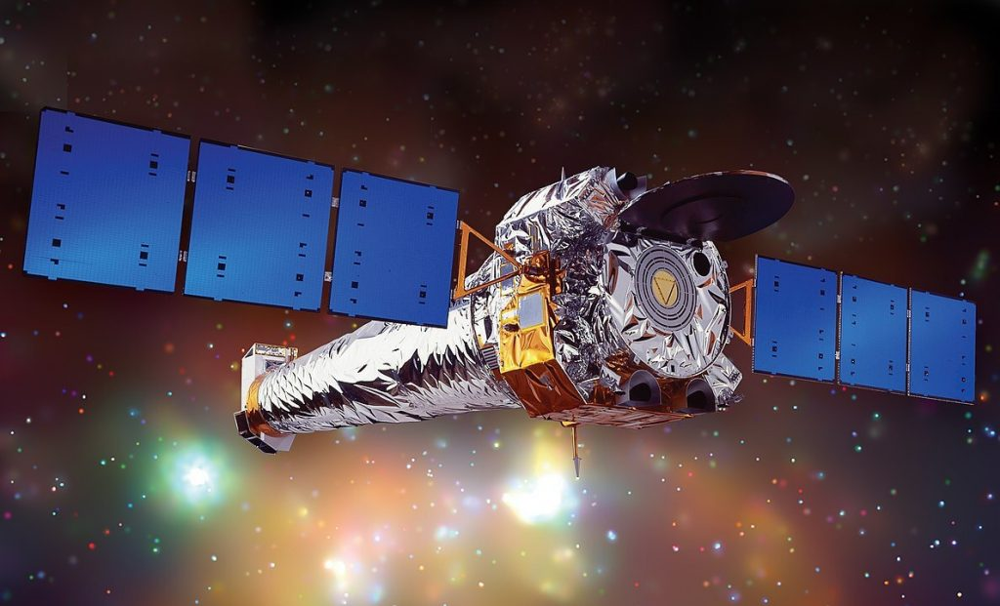

ဒီ ဂြိုဟ်ကို မစ်ကီးဝေး ဂလက်ဆီရဲ့ အိမ်နီးချင်း ဂလက်ဆီ တစ်ခု ဖြစ်တဲ့ Messier 51 (M51) ဂလက်ဆီ ထဲမှာ ရှာဖွေ တွေ့ရှိ ထားတာ ဖြစ်ပါတယ်။ ဒါဟာ တကယ်သာ ဟုတ်မှန် ခဲ့မယ် ဆိုရင် မစ်ကီးဝေး ဂလက်ဆီ ရဲ့ ပြင်ပမှာ ဂြိုဟ်တစ်စင်းကို ပထမဆုံး ရှာဖွေ တွေ့ရှိမှုပဲ ဖြစ်ပါတယ်။
အခု ရှာဖွေ တွေ့ရှိ မှုကို နာဆာ က လွှတ်တင် ထားတဲ့ ချန်ဒရာ X-Ray တယ်လီစကုပ် ကြီးကနေ ရိုက်ယူထားတဲ့ ပုံရိပ် တွေကနေ ရှာဖွေ တွေ့ရှိ ခဲ့တာ ဖြစ်ပါတယ်။ အခု တွေ့ရှိမှုကြောင့် နေ အဖွဲ့အစည်း ပြင်ပက ဂြိုဟ်တွေ ရှာဖွေရာမှာ အရင်ကထက် ပိုမို ဝေးကွာတဲ့ အရပ် ဒေသ တွေက ဂြိုဟ်တွေကို ရှာဖွေဖို့ အခွင့်အလမ်း သစ်တွေ ထွက်ပေါ် လာမှာ ဖြစ်ပါတယ်။
အခု တွေ့ရှိတဲ့ M51 ဂလက်ဆီ ကို Whirlpool (ရေဝဲ) ဂလက်ဆီ လို့လဲ ခေါ်ပါတယ်။ သူ့ ပုံစံက တကယ့် ဝဲဂယက် ကြီး တစ်ခုနဲ့ တူနေ လို့ပါ။
အရင်က ရှာတွေ့ ခဲ့သမျှ ဂြိုဟ်တွေ အားလုံးဟာ မစ်ကီးဝေး ဂလက်ဆီ ကြီးထဲက ဂြိုဟ်တွေ ဖြစ်ကြပါတယ်။ ရှာတွေ့ခဲ့တဲ့ ဂြိုဟ်တွေ အားလုံးဟာ ကမ္ဘာက နေဆိုရင် အလင်းနှစ် ၃,၀၀၀ အတွင်းမှာ ရှိကြပါတယ်။ ဒါပေမယ့် အခု M51 ဂလက်ဆီဟာ ကမ္ဘာ ကနေ အလင်းနှစ် ၂၈ သန်းတောင် ဝေးတဲ့ နေရာမှာ ရှိတာပါ။ ဒီ အကွာအဝေးဟာ အရင် ရှာတွေ့ခဲ့တဲ့ ဂြိုဟ်တွေရဲ အကွာအဝေးထက် အဆပေါင်း ထောင်ချီ ပိုဝေးတဲ့ နေရာမှာ ရှိနေတာပါ။

အခု တွေ့ရှိ ချက်တွေကို Nature Astronomy ပညာရပ် ဂျာနယ်မှာ တင်ပြထားပါတယ်။
အခု ဂြိုဟ်ကို Transit (အကူး အပြောင်း) လို့ ခေါ်တဲ့ နည်းကို အသုံး ပြုပြီး ရှာဖွေ တွေ့ရှိခဲ့တာ ဖြစ်ပါတယ်။ အရမ်းဝေးတဲ့ နေရာမှာ ရှိတဲ့ ကြယ်တွေကို ပတ်နေတဲ့ ဂြိုဟ်တွေကို တိုက်ရိုက် မျက်စေ့နဲ့ မြင်ရဖို့ ဖြစ်စေ၊ ဓါတ်ပုံ ရိုက်ဖို့ ဖြစ်စေ မဖြစ်နိုင် ပါဘူး။ ဒီတော့ ဒီ ကြယ်တွေမှာ ရှိတဲ့ ဂြိုဟ်တွေကို ရှာဖွေဖို့ သွယ်ဝိုက်တဲ့ နည်းလမ်းကို အသုံး ပြုကြ ရပါတယ်။
ဂြိုဟ်တွေက ကြယ်တွေကို ပတ်နေကြတာ ဖြစ်ပါတယ်။ (ဘယ်ကြယ်ကိုမှ မပတ်ပဲ အာကာသထဲ လွင့်မြော နေတဲ့ ဂြိုဟ်တွေ လဲ ရှိပါတယ်။ ဒီအကြောင်းတော့ သီးသန့် ဆောင်းပါး ရေးပါမယ်)။ ဒီလို ပတ်တဲ့ အခါ ကြယ်ရဲ့ ရှေ့ကို ဂြိုဟ် ရောက် သွားတဲ့ အချိန်မှာ ကြယ်က လာတဲ့ အလင်းရောင်ကို ကွယ်လိုက် သလို ဖြစ်သွားတာမို့ အဲ့သည် အချိန်မှာ ကြယ်ရဲ့ အရောင်က နဲနဲလေး မှိန်သွားပါတယ်။ ဒါကို မျက်စေ့နဲ့ ကြည့်လို့ မသိသာ ပေမယ့် ကြယ်တွေရဲ့ အလင်းရောင် ပြင်းအားကို တိုင်းတဲ့ စက်ကိရိယာ တွေနဲ့ တိုင်းကြည့်လို့ ရပါတယ်။ ဂြိုဟ်က ကြယ်ကို အချိန်မှန် ပတ်နေတာမို့ ဒီလို အလင်းရောင် မှိန်သွားတာ ကလဲ အချိန်မှန် ဖြစ်နေပါ လိမ့်မယ်။ ဒီ နည်းနဲ့ ရှာဖွေတဲ့ နည်းလမ်းကို “Transit” နည်းလို့ ခေါ်တာ ဖြစ်ပါတယ်။
ပုံမှန် ဆိုရင်တော့ ဒီလို ရှာဖွေတာကို လူ့မျက်စေ့နဲ့ မြင်ရတဲ့ လျှပ်စစ်သံလိုက် သံစဉ်လှိုင်းခွင် မှာပဲ ရှာလေ့ ရှိပါတယ် (အလင်းရောင်ကို ရှာတယ်လို့ ဆိုလိုတာပါ)။ ဒါပေမယ့် အခု ရှာဖွေ မှုမှာတော့ အလင်းရောင် အစား X-Ray ရောင်စဉ်ကို အသုံးပြုပြီး ရှာဖွေ ခဲ့တာ ဖြစ်ပါတယ်။
ပုံမှန် ကြယ်တွေက ထွက်တဲ့ X-Ray က အားနည်းတာမို့ သိပ်ပြီး ဖမ်းယူလို့ မလွယ်ပါဘူး။ ဒါပေမယ့် Binary star လို့ ခေါ်တဲ့ ကြယ် နှစ်လုံးပူး တွေ ကျတော့ X-Ray လှိုင်းတွေ အများကြီး ထွက်တဲ့ ကြယ်နှစ်လုံး ပူးတွေ ရှိပါတယ်။ ဒီ ကြယ် နှစ်လုံးတွဲ တွေမှာ တစ်လုံးက နျူထရွန် ကြယ် (Neutron Star) သို့မဟုတ် တွင်းနက် (Black Hole) ဖြစ်ပြီး ကျန် တစ်လုံးက သာမန် ကြယ်တစ်စင်း ဖြစ်ပါတယ်။ ဒီလို စုံတွဲ ကြယ် မျိုးမှာဆို Black hole သို့ Neutron start က ကျန်တဲ့ သူ့ အဖေါ် ကြယ် ဆီက ဓါတ်ငွေ့တွေကို ဆွဲယူ ဝါးမြို ပစ်နေပါတယ်။ ဒီ လို ဝါးတဲ့ ဖြစ်စဉ်မှာ Black hole (သို့) နျူထရွန် ကြယ် နားက ဓါတ်ငွေ့တွေက အလွန် ပူလာပြီး X-Ray ရောင်ခြည်တွေ ဖြာထွက် လာပါတယ်။

ဒီနည်းနဲ့ ရှာဖွေ တာဟာ အလင်းရောင်ကို ရှာဖွေတာ ထက်လဲ ပိုပြီး ဝေးဝေး ရှာနိုင်ပါတယ်။ ဘာကြောင့်ဆို ကြယ် တွေက အရွယ် အစား အားဖြင့် ကြီးတော့ သူ့ရှေ့က ဂြိုဟ် ဖြတ်သွားရင် အလင်းအားက နည်းနည်းလေးပဲ ကျသွားတာပါ။ နဲနဲ ဝေးသွားရင် ဒီ အလင်းအား ကျသွားတာကို ရှာဖို့ မဖြစ်နိုင် တော့ပါဘူး။
အခု ကြယ် စုံတွဲ တွေကျတော့ ဂြိဟ်က ဖြတ်သွားရင် X-Ray လှိုင်းက လုံးဝ နီးပါး ပျောက်သွား တာမို့ အရမ်း ဝေးနေသည့် တိုင်အောင် လှိုင်းရဲ့ ပြင်းအား ကွာခြားချက်ကို ရှာရတာ ပိုလွယ်ပါတယ်။
ဒီ နည်းကို အသုံး ပြုပြီး သိပ္ပံ ပညာရှင် တွေဟာ M51-ULS-1 ကြယ်စုံတွဲက ထွက်တဲ့ X-Ray လှိုင်း တွေကို စောင့်ကြည့် လေ့လာ ခဲ့ကြပါတယ်။ ဒီ ကြယ်စုံတွဲက M51 ဂလက်ဆီ ထဲမှာ ရှိတဲ့ ကြယ်စုံတွဲ တစ်တွဲ ဖြစ်ပါတယ်။ သူ့မှာ တစ်ခုက Black hole (သို့) နျူထရွန် ကြယ် ဖြစ်ပါတယ်။ ကျန်တစ်ခုက တော့ရိုးရိုး ကြယ်ပါ။ ဒီ ရိုးရိုးကြယ်ရဲ့ ဒြပ်ထု က ကျွန် တော်တို့ နေရဲ့ ဒြပ်ထုထက် အဆ ၂၀ လောက်တော့ ပိုကြီးပါတယ်။
ဒီ ကြယ်စုံတွဲက ထွက်တဲ့ X-Ray လှိုင်းတွေကို နာဆာရဲ့ ချန်ဒရာ အာကာသ လေ့လာရေး X-Ray တယ်လီ စကုပ် ကြီးနဲ့ တိုင်းထွာ ကြည့်ရှု မှတ်တမ်း ယူခဲ့ပါတယ်။ ၃ နာရီ အချိန်ကြာအောင် မှတ်တမ်း ယူထားတဲ့ ကာလ အတွင်းမှာ X-Ray လှိုင်းတွေဟာ လုံးဝ ပျောက်ကွယ် သွားတာကို တွေ့ရှိ ကြရပါတယ်။

ဒီ အချက်က အတော်လေး စိတ်လှုပ်ရှား စရာ ဖြစ်ပါတယ်။ ဒီလောက် ဝေးတဲ့ နေရာမှာ ဂြိုဟ်တစ်စင်းကို ရှာတွေ့ဖို့ ဆိုတာက လွယ်ကူတဲ့ ကိစ္စ မဟုတ်ပါဘူး။ ဒါပေမယ့် အခု တွေ့ရှိချက်ကို အတည်ပြုဖို့ အတွက် နောက်ထပ် အချက်အလက်တွေ ထပ်မံ စုဆောင်းဖို့တော့ လိုပါလိမ့် အုံးမယ်။
ပြဿနာ တစ်ခုက ဒီဂြိုဟ်ဟာ တစ်ပတ် ပါတ်မိဖို့ အချိန် နှစ် ၇၀ ကြာတာပဲ ဖြစ်ပါတယ်။ ဒီတော့ နောက် တစ်ကြိမ် ထပ်ဖြတ်ဖို့ ဆိုတာက နောက် နှစ် ၇၀ တောင် စောင့်ရအုံးမှာ ဖြစ်ပါတယ်။ ဒီတော့ အခု ဂြိုဟ်ကို အတည်ပြုဖို့က နောက် နှစ် ၇၀ လောက် ထပ်စောင့်ရ မလို ဖြစ်နေပါတယ်။
“ကံဆိုးတာ ကတော့ ဒီ တွေ့ရှိချက်ကို အတည်ပြုဖို့ဆို နောက်ထပ် ဆယ်စုနှစ် များစွာ စောင့်ရမယ့်ပုံ ရှိပါတယ်” လို့ ဒီ စာတမ်းကို ပူးတွဲ ရေးသား တင်သွင်းခဲ့သူ ပရင်စတန် တက္ကသိုလ် (University of California at Santa Cruz) က ပညာရှင် နီယာ အီမာရာ (Nia Imara) က ပြောပါတယ်။
“ဒီ ဂြိုဟ်ရဲ ပတ်တဲ့ အချိန်နဲ့ ပါတ်သက်ပြီး မသေချာ မရေရာ မှုကလဲ ရှိနေတော့ ဘယ်အချိန်မှာ ပြန်ဖြတ်မလဲ ဆိုတာ အတိအကျ သိပြီး စောင့်ကြည်ဖို့ကလဲ အခက်အခဲ ဖြစ်နေ ပြန်ပါတယ်” လို့ သူမက ဆက်ပြောပါတယ်။
“ကျွန်မတို့ရဲ့ ကြေငြာချက်က စိတ်လှုပ်ရှားစရာ ကောင်းသလို အတော်လေးလဲ ရဲရင့်တဲ့ ကြေငြာချက် ဖြစ်ပါတယ်။ ဒါ့ကြောင့် အခြား နက္ခတ် ပညာရှင်တွေ အနေနဲ့ ဒီ အချက်အလက် တွေကို သေချာ ဂရုတစိုက် စစ်ဆေး သုံးသပ် ကြမယ်လို့ မျှော်လင့်ပါတယ်။ ကျွန်မတို့ကတော့ ကျွန်မတို့ရဲ့ ယူဆချက်က အတော်လေး ခိုင်မာတယ်လို့ ယုံကြည်ပါတယ်” လို့ နောက်ထပ် ပူးတွဲ ရေးသားသူ တစ်ဦးဖြစ်တဲ့ ပရင်စတန် တက္ကသိုလ် (Princeton University in New Jersey) က ပညာရှင် ဂျူလီယာ ဘန်းစတန်း (Julia Berndtsson) က ဖြည့်စွက် ပြောကြား ပါတယ်။
အကယ်လို့သာ ဒီ ကြယ်စုံတွဲ မှာ ဂြိုဟ် ရှိနေမယ် ဆိုရင် ဒီ ဂြိုဟ်ဟာ အတော်လေး ဆိုးဝါးတဲ့ အတိတ် သမိုင်းကို ကြုံတွေ့ ခဲ့ရမှာ ဖြစ်ပါတယ်။ အတိတ် တချိန်က ဆူပါနိုဗာ ပေါက်ကွဲမှုကြီး ကိုလဲ ခံခဲ့ရပြီး အနာဂါတ် ကလဲ အန္တရာယ် များလွန်း လှပါတယ်။ အနာဂါတ် တချိန်မှာ ကျန်တဲ့ ကြယ်ကြီးကလဲ ဆူပါနိုဗာ အနေနဲ့ ပေါက်ကွဲ ထွက်သွား နိုင်ပါတယ်။ ဒီလိုသာ ပေါက်ကွဲသွား ခဲ့ရင် ပထမ အကြိမ် နျူထရွန်ကြယ် ဖြစ်တဲ့ အချိန် ပေါက်ကွဲတုန်းက မပျက်စီးပဲ ကျန်နေ ခဲ့ရင်တောင် နောက်တကြိမ် ပေါက်ကွဲမှုကို ခံနိုင်မယ် ဆိုတာက မသေချာ လှပါဘူး။
အခု သုတေသန အဖွဲ့ဟာ ဒီ ကြယ် စုံတွဲ တစ်ခုထဲကို စောင့်ကြည့် နေခဲ့တာ မဟုတ်ပါဘူး။ ဂလက်ဆီ ၃ ခု ထဲမှာ ရှိနေတဲ့ ကြယ်စုံတွဲ ၂၀၀ ကျော်ကို စောင့်ကြည့် မှတ်တမ်း ယူနေခဲ့တာ ဖြစ်ပါတယ်။ သူတို့ စောင့်ကြည့်တဲ့ အထဲမှာ M51 ဂလက်ဆီထဲမှာ ၅၅ စုံ၊ M101 ဂလက်ဆီ ထဲမှာ ကြယ် စုံတွဲ ၆၄ စုံ နဲ့ M104 ဂလက်ဆီ ထဲမှာ စုစုပေါင်း ကြယ် စုံတွဲ ၁၁၉ စုံ ပါဝင်ပါတယ်။ ဒီ အထဲ ကမှာ အခု ဂြိုဟ်ကို တွေ့ရှိခဲ့တာ ဖြစ်ပါတယ်။
နောက် တဆင့် အနေနဲ့ သုတေသီ အဖွဲ့ဟာ အခြား ဂလက်ဆီ တွေမှာ အရင်က တိုင်းထွာပြီး သိမ်းဆည်းထား ခဲ့တဲ့ X-Ray မှတ်တမ်းဟောင်း တွေကို ပြန်လည် စိစစ်ပြီး အခြား ဖြစ်နိုင်ချေ ရှိတဲ့ ဂြိုဟ်တွေကို ရှာဖွေ မယ်လို့ သိရပါတယ်။ ချန်ဒရာကနေ ဂလက်ဆီ အခု ၂၀ လောက်ကို အသေးစိတ် မှတ်တမ်း ယူထားတဲ့ စာရင်း အချက်အလက် တွေ ရှိနေပါတယ်။ ဒီ အထဲက M31 နဲ့ M33 ဂလက်ဆီ တွေဟာ အခု M51 ထက် ကမ္ဘာနဲ့ ပိုနီးပါတယ်။ နောက်ပြီးတော့ မစ်ကီးဝေး ထဲမှာတင် X-Ray ထွက်တဲ့ ရပ်ဝန်းတွေနဲ့ ကြယ်စုံတွဲ တွေကို လေ့လာပြီး ဂြိုဟ်တွေ ရှိမရှိ စုံစမ်း စစ်ဆေးတာ မျိုးကိုလဲ ပြုလုပ် နိုင်ပါတယ်။
Reference:
Astronomers may have discovered the first planet outside of our galaxy | PHYS
Astronomers have found what may be the first exoplanet in another galaxy ever detected | SPACE